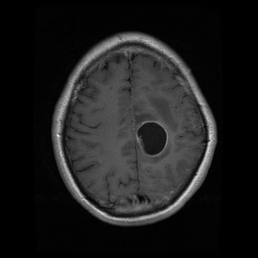
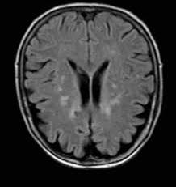
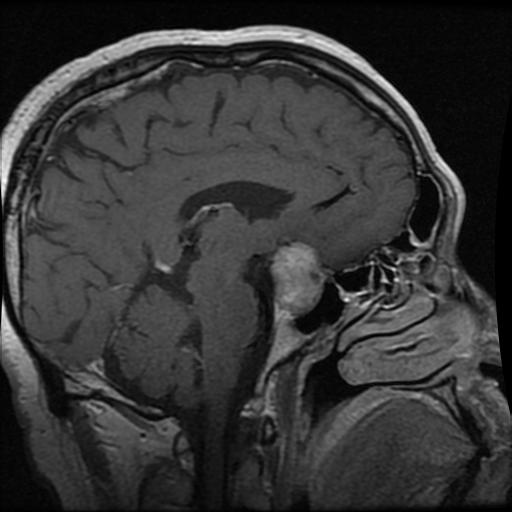

Arrastra una imagen MRI aquí
o haz clic para seleccionar
JPG · PNG · JPEGAviso importante: Este sistema es una herramienta de apoyo. No reemplaza el diagnóstico de un profesional médico.

Glioma Meningioma
Meningioma

No Tumor
PituitaryArrastra una imagen MRI aquí
o haz clic para seleccionar
JPG · PNG · JPEGAviso importante: Este sistema es una herramienta de apoyo. No reemplaza el diagnóstico de un profesional médico.